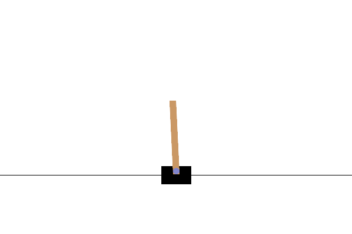

让一根杆站稳
先认识强化学习，再用小车项目把概念看见。
从这里开始：你要教会谁？
你让 AI agent 帮忙写出了程序。现在，这个程序要训练另一个“学习者”：决定小车向左还是向右施力的智能体 agent。
提出任务的人
你的愿望：让杆尽量久地保持平衡。
写代码的 AI agent
帮你搭建模拟、训练和评估程序。
强化学习智能体
程序里的决策者，通过尝试学习怎样施力。
为什么不直接告诉它每一步向哪边？
人可以尝试写“杆往左倒就向左推”这样的规则，但还要考虑小车和杆的速度。这个实验选择让程序从多次尝试的后果中学习，而不是预先写出所有情况的正确动作。
人写判断条件
遇到什么情况就做什么；程序执行你写好的规则。
人给正确示范
告诉学习者每个例子应该输出什么，让它模仿。
本项目的做法
不给逐步标准答案，只给每步奖励，让学习算法调整决策。
先看它做到了什么
想象你运行一次回放：小车左右施力，让杆尽量保持直立。这个项目用强化学习学习这个本领，就像练习用手掌托住一根长棍。

先随便试
随机向左或向右施力，得到比较的起点。
再练习
收集动作的后果，让策略逐渐改善。
最后检验
读取保存的模型，在新的初始状态上评估。
一条命令，走到哪一段？
命令行是这个项目的入口。以下是 main() 中的真实分派逻辑；函数把不同工作分开。
原文件：cartpole.py · 第 192–199 行
if args.command in ("random", "all"):
evaluate()
if args.command in ("train", "all"):
train(args.timesteps)
if args.command in ("evaluate", "all"):
evaluate(load_model())
if args.command in ("replay", "all"):
replay(load_model(), human=args.human)random 或 all：不传模型，运行随机策略评估。
train 或 all：按指定步数训练并保存模型。
evaluate 或 all：先从文件加载，再评估。
replay 或 all：先加载，再生成动画或显示窗口。
你能让 AI 改得更准确
只看已有表现
在项目目录运行 bash run.sh replay。它会更新回放文件。
重新做实验
bash run.sh all 会依次随机评估、训练、重载评估、回放，并覆盖原输出。
说清你的要求
“先解释 evaluate 的每一步，再指出随机决策与模型决策的区别。”
下一章先认清角色：谁模拟物理，谁选动作，谁负责学习。
试着判断：行动会带来什么？
1. 在这个学习任务里，“智能体”主要指谁？
2. 程序没有每一步的正确方向标签，为什么仍可能学会？
3. 回放十次后，为什么不能说模型又练习了十次？
谁在负责什么
认清角色，才能把需求交给正确的代码位置。
把项目看作一个训练场
练习平衡时，场地决定物理规则，练习者决定如何出手，教练调整练法。在这里，环境、策略和学习算法也各有分工。
Gymnasium
创建小车世界，负责 reset、step 和画面。
PPO
在训练期间改进选动作的策略。
Stable-Baselines3
把复杂学习过程封装成 learn、save、load、predict。
PyTorch承担网络计算，NumPy计算评估统计，Pillow拼出回放。
组件群聊：一次评估如何配合
下面是便于理解的拟人化对话。实际代码在同一进程里调用函数，并没有聊天服务或网络通信。
监督记录，不等于改变规则
Monitor就像场边的记分员。CPU足以承担这里的小型计算。
原文件：cartpole.py · 第 101–105 行
def train(total_timesteps):
"""训练阶段：让库负责收集交互经验和 PPO 参数更新。"""
OUTPUT_DIR.mkdir(exist_ok=True)
# Monitor 只记录每回合奖励和长度，不改变环境的奖励规则。
train_env = Monitor(gym.make(ENV_ID), str(OUTPUT_DIR / "train.monitor.csv"))定义 train，接收希望训练的交互步数。
创建输出目录；目录已存在也可以。
创建 CartPole 环境，再用 Monitor 记录训练回合。记录文件是 train.monitor.csv。
cartpole.py
主入口、评估、训练、模型加载和回放。
outputs/
模型、统计记录、训练日志和回放。
run.sh / setup.sh
前者启动项目的 Python；后者安装项目所需的软件。
试着分工：该让 AI 改哪一层？
1. 想让“杆更直”得到额外奖励，应该让 AI 检查什么？
2. 训练结果不错，但动画保存失败，先检查哪条路径？
3. AI 声称项目通过云端接口获取每一步动作，你会如何核实？
四个数字的旅程
跟随一次交互，理解策略到底看见了什么。
先分清：世界发生了什么，我看到了什么
状态 state像房间里的实际情况，观测像窗户里看到的部分。本项目给出的四个数字足以作为入门理解的“小车当前情况”；其他任务可能只能看到局部画面。
状态
小车在哪、移动多快，杆倾斜多少、转动多快。
观测
环境交给策略的 obs；这个项目是四个数字。
动作 action
是可执行的控制选择，不是“我要 500 分”的目标。
策略读的是仪表盘
开车不能只看当前位置，还要看速度。这里的观测 obs也是一块仪表盘：相同倾角可能正在回正，也可能继续倒下。
小车位置
obs[0]：离轨道中心多远，单位为米。
小车速度
obs[1]：车向哪边移动、有多快，单位为米/秒。
杆角度
obs[2]：偏离竖直方向多少，单位为弧度。
杆角速度
obs[3]：杆的转动趋势，单位为弧度/秒。
点五次，看数据走一圈
一个回合包含许多交互步。奖励 reward逐步累加，成为回合的回报 return。
每一步都 +1，为什么还能学会？
想象两次尝试：一次 3 步就倒，另一次坚持 8 步。每一步都得到同样的 +1，但后者能继续获得更多奖励，所以累计回报更高。
+1 → +1 → +1 → 结束
单步奖励都是 1；回合回报是 3。
这两个数字是教学示例，不是项目的真实回放结果。点按钮只切换解释，不运行训练。
一行推进世界，两行累计结果
原文件：cartpole.py · 第 53–58 行
# step 执行动作，并返回“下一时刻”的观测，而不是原来的观测。
obs, reward, terminated, truncated, info = env.step(action)
# 默认 CartPole 每步 +1，连失败的最后一步也 +1。
# 因此一回合总奖励（return）等于走过的步数，最多 500。
episode_return += float(reward)
steps += 1step 真正执行动作，并把新的四个数重新放入 obs。
reward 是这一步的分数；默认规则连失败的最后一步也给 +1。
episode_return 累加奖励，steps 记录走了几步。
terminated
位置超出 ±2.4 米，或杆角度超出约 ±12°。
truncated
即使没有倒下，也要结束这回合；它可与 terminated 同时为真。
试着追踪：哪里出了问题？
1. 两个尝试每步都 +1，一个坚持 20 步，另一个 80 步，哪个回报更高？
2. 两个局面杆角度相同，一个正在回正，一个正加速倒下，应该只看角度吗？
3. 一回合到达 500 步但没倒，下一步应该怎样？
学习、保存与重载
看懂模型的生命周期，避免把“运行”误认为“学习”。
练琴和演奏，用的是同一双手
练习会改变熟练程度，演奏只是展示当前能力。模型也一样：训练会调整参数，推理则使用它们。
MlpPolicy
接收四个观测数值。网络是由多层可调数值计算组成的模型。
PPO
learn 收集经验、更新参数；本项目没有自行编写优化公式。
predict
根据当前观测选动作，评估和回放都使用它。
学习到底改变了什么？
把策略想成一张可调整的倾向表：在某种观测下，向左或向右各有多大可能。真实模型用神经网络表达这种关系，不是把所有情况逐条存成表。
同一组四个观测数
先把小车位置、速度、杆角度、角速度交给模型。
左 50% / 右 50%
仅作示意：这是一个还没有偏好的策略例子，并非实际初始化概率。
左 70% / 右 30%
仅作示意：如果证据支持向左更有利，更新可能提高向左的倾向。
探索 exploration意味着训练时即使左侧概率更高，也可能采样到右侧。评估时 deterministic=True 则在同一观测下选概率更高的动作。
PPO 的直觉：先尝试，再复盘，小步改
你练琴不会只凭一个音就彻底改变手法。PPO 同样先收集一批经历，再根据表现调整动作倾向；下图是直觉解释，不是完整数学推导。
采样 rollout
先让当前策略实际尝试，记录每一步和后续结果。
价值估计 value
一个辅助网络预测“这个局面本来大概能得多少”。它也会犯错，并随训练改善。
优势 advantage
把经验与预期比较，形成“比预想好或差”的学习信号；不是只看这一步的 +1。
裁剪 clipping
鼓励有利方向的调整，但别因为有限的一批经历就把动作倾向改得太猛。
折扣 discount用于内部学习估计；经验不足时估计可能不准。因此 PPO 不保证每次更新都会变好，裁剪也不是给所有动作概率变化设置硬性上限。
可选深入：PPO 官方教学说明。本项目安装的 SB3 实现负责这些计算，你暂时不必读公式。
真实代码：学完，再保存
原文件：cartpole.py · 第 110–114 行
model = PPO("MlpPolicy", train_env, device="cpu", seed=TRAIN_SEED, verbose=1)
# timesteps 是环境交互步数，不是回合数，也不是参数更新次数。
# 默认每批收集 2048 步，实际总步数会向上补齐到完整批次。
model.learn(total_timesteps=total_timesteps)
model.save(MODEL_PATH)创建 PPO 模型：使用 MlpPolicy、训练环境、CPU 和训练种子。seed 让随机过程更容易复现。
total_timesteps 指交互步数，不是回合数，也不是参数更新次数。
learn 进行训练；save 把训练后的模型保存到 MODEL_PATH。
种子 seed用于让实验更容易对照。训练时会采样动作探索；评估使用 deterministic=True，在当前观测下选择概率最大的动作。
保存是一张可以带走的乐谱
持久化把训练与使用连接起来。此项目训练结束不返回模型对象，评估必须从文件重建模型。
原文件：cartpole.py · 第 131–135 行
def load_model():
"""重建模型并加载已学到的参数；加载本身不会继续训练。"""
if not MODEL_PATH.is_file():
raise SystemExit("还没有保存的模型，请先运行：bash run.sh train")
return PPO.load(MODEL_PATH, device="cpu")load_model 是负责读取模型的函数。
先检查模型文件存在；缺失时给出清晰的训练指令并退出。
读取保存的参数，在 CPU 上恢复模型；读取不会继续训练。
ppo_cartpole.zip
训练保存的模型；train 再次执行会从头训练并覆盖它。
training.json
本次记录：seed 42、cpu、请求 50000、实际 51200。
更准确的 AI 指令
“增加继续训练功能：先加载旧模型，再显式调用 learn，并另存结果。”
试着区分：学了，还是只用了？
1. 你想知道“模型学会了”具体意味着什么，哪项最准确？
2. 某次向右施力后得到 +1，能立刻断言向右是好动作吗？
3. PPO 的裁剪主要想解决什么问题？
怎样相信实验结果
从漂亮动画走向可复查的证据，也学会定位常见问题。
像做对照实验一样比较
比较两种方法，要尽量给它们相同的起跑条件。这里的评估让随机策略与训练后的 PPO在分别新建的环境里使用相同的初始状态种子。
每种策略各 10 回合
随机回报 25.4 ± 10.7；PPO 回报 500.0 ± 0.0。
种子
训练用 42；评估用 10000–10009；回放用 20000。
标准差
PPO 的 0.0 表示这十次都是 500，不表示所有未来测试都能成功。
来源：项目已有的 random_eval.json、ppo_eval.json 和 README 历史说明。课程制作没有重新运行训练；这些数值是已有实验的快照。
让比较条件写进代码
原文件：cartpole.py · 第 32–39 行
for episode in range(EVAL_EPISODES):
seed = EVAL_SEED + episode
# reset 开始一个新回合，返回初始观测和辅助信息。
# obs = [小车位置(m), 小车速度(m/s), 杆角度(rad), 杆角速度(rad/s)]。
# 杆角度相对竖直方向；观测是 4 个数，不是动画中的图像。
obs, info = env.reset(seed=seed)
env.action_space.seed(seed) # reset 的 seed 不负责动作空间的随机数。
episode_return = 0.0重复 EVAL_EPISODES 次；episode 从 0 开始计数。
每回合种子为 EVAL_SEED 加回合索引，因此是 10000 到 10009。
reset 设置环境的初始状态；观测有四个数字。
动作空间还要单独设置 seed，控制随机策略的动作采样。
把回合累计回报归零，准备开始本次尝试。
卡住时，沿证据排查
提示没有模型
检查 outputs/ppo_cartpole.zip；load_model 会提示先运行 train。
运行不了 Python
run.sh 使用项目 .env/bin/python。缺失时先检查 setup.sh 是否成功完成。
窗口打不开
默认 replay 输出 GIF，无需桌面；--human 需要可用的图形桌面。
训练后图还是旧的
训练、评估、回放分别写自己的文件。重新训练后要重新评估并生成动画。
注意两种“环境”：Python 独立环境用于运行程序，Gymnasium 环境用于模拟世界。项目的运行脚本使用隔离模式，模型创建和加载都指定 CPU。
最后练习：你会相信哪种解释？
1. 一段 GIF 撑到了上限，你能得出什么结论？
2. AI 只给随机策略使用更难的初始状态，再宣布 PPO 优胜，怎么改？
3. 重新训练后，旧 ppo_eval.json 仍是满分，能证明新模型满分吗？
你现在能追踪
从 main 到环境、策略、保存文件和回放。
你现在能判断
区分即时奖励与回报，区分训练与推理。
下一步动手
打开 cartpole.py 的 evaluate，从 obs 如何更新开始逐行核对。